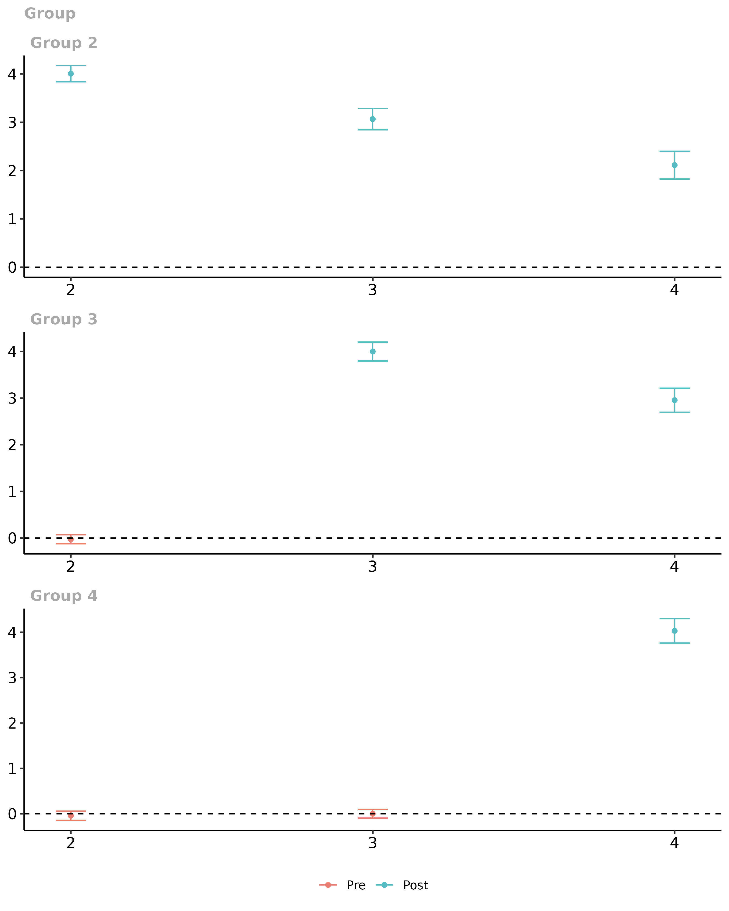

Pre-Testing in a DID Setup using the did Package
Brantly Callaway and Pedro H.C. Sant'Anna
2020-07-04
pre-testing.RmdAnother very appealing feature of many DID applications with multiple periods is that the researcher can pre-test the parallel trends assumptions.
The idea here is simple: although one can not test whether parallel trends itself holds, one can check if it holds in periods before treated units actually become treated.
Importantly, this is just a pre-test; it is different from an actual test. Whether or not the parallel trends assumption holds in pre-treatment periods does not actually tell you if it holds in the current period (and this is when you need it to hold!). It is certainly possible for the identifying assumptions to hold in previous periods but not hold in current periods; it is also possible for identifying assumptions to be violated in previous periods but for them to hold in current periods. That being said, the right way to think about a pre-test is as (potentially strong) piece of evidence on the validity of the DID design in a particular application.
Common Approaches to Pre-Testing in Applications
By far the most common approach to pre-testing in applications is to run an event-study regression. Here, the idea is to run a regression that includes leads and lags of the treatment dummy variable such as \[ Y_{it} = \theta_t + \eta_i + \sum_{l=-\mathcal{T}}^{\mathcal{T}-1} D_{it}^l \mu_l + v_{it} \]
where \(D_{it}^l = 1\) if individual \(i\) has been exposed to the treatment for \(l\) periods in period \(t\), and \(D_{it}^l = 0\) otherwise. To be clear here, it is helpul to give some examples. Suppose individual \(i\) becomes treated in period 3. Then,
\(D_{it}^0 = 1\) when \(t=3\) and is equal to 0 in other time periods
\(D_{it}^2 = 1\) when \(t=5\) and is equal to 0 in other time periods
\(D_{it}^{-2} = 1\) when \(t=1\) and is equal to 0 in other time periods.
And \(\mu_l\) is interpreted as the effect of treatment for different lengths of exposure to the treatment. Typically, \(\mu_{-1}\) is normalized to be equal to 0, and we follow that convention here. It is very common to interpret estimated \(\mu_l\)’s with \(l < 0\) as a way to pre-test the parallel trends assumption.
Pitfalls with Event Study Regressions
Best Case Scenario for Pre-Testing
First, let’s start with a case where an event study regression is going to work well for pre-testing the parallel trends assumption
# generate dataset with 4 time periods time.periods <- 4 # generate dynamic effects te.e <- time.periods:1 # generate data set with these parameters # (main thing: it generates a dataset that satisfies # parallel trends in all periods...including pre-treatment) data <- build_sim_dataset() head(data) #> G X id period Y treat #> 1 2 0.530541 1 1 4.264584 1 #> 8001 2 0.530541 1 2 10.159789 1 #> 16001 2 0.530541 1 3 9.482624 1 #> 24001 2 0.530541 1 4 10.288278 1 #> 2 4 1.123550 2 1 3.252148 1 #> 8002 4 1.123550 2 2 7.038382 1
The main thing to notice here:
- The dynamics are common across all groups. This is the case where an event-study regression will work.
Next, a bit more code
#----------------------------------------------------------------------------- # modify the dataset a bit so that we can run an event study #----------------------------------------------------------------------------- # generate leads and lags of the treatment Dtl <- sapply(-(time.periods-1):(time.periods-2), function(l) { dtl <- 1*( (data$period == data$G + l) & (data$G > 0) ) dtl }) Dtl <- as.data.frame(Dtl) cnames1 <- paste0("Dtmin",(time.periods-1):1) colnames(Dtl) <- c(cnames1, paste0("Dt",0:(time.periods-2))) data <- cbind.data.frame(data, Dtl) row.names(data) <- NULL head(data) #> G X id period Y treat Dtmin3 Dtmin2 Dtmin1 Dt0 Dt1 Dt2 #> 1 2 0.530541 1 1 4.264584 1 0 0 1 0 0 0 #> 2 2 0.530541 1 2 10.159789 1 0 0 0 1 0 0 #> 3 2 0.530541 1 3 9.482624 1 0 0 0 0 1 0 #> 4 2 0.530541 1 4 10.288278 1 0 0 0 0 0 1 #> 5 4 1.123550 2 1 3.252148 1 1 0 0 0 0 0 #> 6 4 1.123550 2 2 7.038382 1 0 1 0 0 0 0 #----------------------------------------------------------------------------- # run the event study regression #----------------------------------------------------------------------------- # load plm package library(plm) # run event study regression # normalize effect to be 0 in pre-treatment period es <- plm(Y ~ Dtmin3 + Dtmin2 + Dt0 + Dt1 + Dt2, data=data, model="within", effect="twoways", index=c("id","period")) summary(es) #> Twoways effects Within Model #> #> Call: #> plm(formula = Y ~ Dtmin3 + Dtmin2 + Dt0 + Dt1 + Dt2, data = data, #> effect = "twoways", model = "within", index = c("id", "period")) #> #> Balanced Panel: n = 6988, T = 4, N = 27952 #> #> Residuals: #> Min. 1st Qu. Median 3rd Qu. Max. #> -9.8577453 -0.7594999 0.0066022 0.7639995 11.6570179 #> #> Coefficients: #> Estimate Std. Error t-value Pr(>|t|) #> Dtmin3 0.041851 0.070134 0.5967 0.5507 #> Dtmin2 0.023539 0.050044 0.4704 0.6381 #> Dt0 4.012515 0.043824 91.5602 <2e-16 *** #> Dt1 3.005615 0.054473 55.1767 <2e-16 *** #> Dt2 2.098672 0.077281 27.1565 <2e-16 *** #> --- #> Signif. codes: 0 '***' 0.001 '**' 0.01 '*' 0.05 '.' 0.1 ' ' 1 #> #> Total Sum of Squares: 82617 #> Residual Sum of Squares: 55795 #> R-Squared: 0.32466 #> Adj. R-Squared: 0.099232 #> F-statistic: 2014.84 on 5 and 20956 DF, p-value: < 2.22e-16 #----------------------------------------------------------------------------- # make an event study plot #----------------------------------------------------------------------------- # some housekeeping for making the plot # add 0 at event time -1 coefs1 <- coef(es) ses1 <- sqrt(diag(summary(es)$vcov)) idx.pre <- 1:(time.periods-2) idx.post <- (time.periods-1):length(coefs1) coefs <- c(coefs1[idx.pre], 0, coefs1[idx.post]) ses <- c(ses1[idx.pre], 0, ses1[idx.post]) exposure <- -(time.periods-1):(time.periods-2) cmat <- data.frame(coefs=coefs, ses=ses, exposure=exposure) library(ggplot2) library(gridExtra) ggplot(data=cmat, mapping=aes(y=coefs, x=exposure)) + geom_line(linetype="dashed") + geom_point() + geom_errorbar(aes(ymin=(coefs-1.96*ses), ymax=(coefs+1.96*ses)), width=0.2) + ylim(c(-2,5)) + theme_bw()

You will notice that everything looks good here. The pre-test performs well (the caveat to this is that the standard errors are “pointwise” and would be better to have uniform confidence bands though this does not seem to be standard practice in applications).
We can compare this to what happens using the did package:
# estimate group-group time average treatment effects did.att.gt <- att_gt("Y", "period", "id", "G", data=data, printdetails=FALSE, bstrap=FALSE, cband=FALSE) summary(did.att.gt) #> #> Reference: Callaway, Brantly and Sant'Anna, Pedro. "Difference-in-Differences with Multiple Time Periods." Working Paper <https://ssrn.com/abstract=3148250>, 2019. #> #> #> #> group time att se #> ------ ----- ----------- ---------- #> 2 2 4.0047961 0.0859163 #> 2 3 3.0651920 0.1129338 #> 2 4 2.1122999 0.1466261 #> 3 2 -0.0275928 0.0490521 #> 3 3 3.9992880 0.1033183 #> 3 4 2.9554333 0.1315381 #> 4 2 -0.0420415 0.0516402 #> 4 3 0.0015543 0.0490802 #> 4 4 4.0303982 0.1369432 #> #> #> P-value for pre-test of parallel trends assumption: 0.79239 # plot them ggdid(did.att.gt)

# aggregate them into event study plot did.es <- aggte(did.att.gt, type="dynamic") # plot the event study ggdid(did.es)

Overall, everything looks good using either approach. (Just to keep things fair, we report pointwise confidence intervals for group-time average treatment effects, but it is easy to get uniform confidence bands by adding the options bstrap=TRUE, cband=TRUE to the call to att_gt.)
Pitfall: Selective Treatment Timing
Abraham and Sun (2018) point out a major limitation of event study regressions: when there is selective treatment timing the \(\mu_l\) end up being weighted averages of treatment effects across different lengths of exposures.
Selective treatment timing means that individuals in different groups experience systematically different effects of participating in the treatment from individuals in other groups. For example, there would be selective treatment timing if individuals choose to be treated in earlier periods if they tend to experience larger benefits from participating in the treatment. This sort of selective treatment timing is likely to be present in many applications in economics / policy evaluation.
Contrary to event study regressions, pre-tests based on group-time average treatment effects (or based on group-time average treatment effects that are aggregated into an event study plot) are still valid even in the presence of selective treatment timing.
To see this in action, let’s keep the same example as before, but add selective treatment timing.
# generate dataset with 4 time periods time.periods <- 4 # generate dynamic effects te.e <- time.periods:1 # generate selective treatment timing # (*** this is what is different here ***) te.bet.ind <- time.periods:1 / (time.periods/2) # generate data set with these parameters # (main thing: it generates a dataset that satisfies # parallel trends in all periods...including pre-treatment) data <- build_sim_dataset()
# run through same code as in earlier example...omitted
# run event study regression # normalize effect to be 0 in pre-treatment period es <- plm(Y ~ Dtmin3 + Dtmin2 + Dt0 + Dt1 + Dt2, data=data, model="within", effect="twoways", index=c("id","period")) summary(es) #> Twoways effects Within Model #> #> Call: #> plm(formula = Y ~ Dtmin3 + Dtmin2 + Dt0 + Dt1 + Dt2, data = data, #> effect = "twoways", model = "within", index = c("id", "period")) #> #> Balanced Panel: n = 6988, T = 4, N = 27952 #> #> Residuals: #> Min. 1st Qu. Median 3rd Qu. Max. #> -10.158205 -0.751216 0.023376 0.805780 11.190180 #> #> Coefficients: #> Estimate Std. Error t-value Pr(>|t|) #> Dtmin3 0.938180 0.071538 13.1144 < 2.2e-16 *** #> Dtmin2 0.424155 0.051047 8.3092 < 2.2e-16 *** #> Dt0 3.655215 0.044701 81.7695 < 2.2e-16 *** #> Dt1 3.199891 0.055563 57.5898 < 2.2e-16 *** #> Dt2 2.610583 0.078828 33.1173 < 2.2e-16 *** #> --- #> Signif. codes: 0 '***' 0.001 '**' 0.01 '*' 0.05 '.' 0.1 ' ' 1 #> #> Total Sum of Squares: 79441 #> Residual Sum of Squares: 58052 #> R-Squared: 0.26925 #> Adj. R-Squared: 0.025329 #> F-statistic: 1544.28 on 5 and 20956 DF, p-value: < 2.22e-16
# run through same code as before...omitted # new event study plot ggplot(data=cmat, mapping=aes(y=coefs, x=exposure)) + geom_line(linetype="dashed") + geom_point() + geom_errorbar(aes(ymin=(coefs-1.96*ses), ymax=(coefs+1.96*ses)), width=0.2) + ylim(c(-2,5)) + theme_bw()

In contrast to the last case, it is clear that things have gone wrong here. Parallel trends holds in all time periods and for all groups here, but the event study regression incorrectly rejects that parallel trends holds – this is due to the selective treatment timing.
We can compare this to what happens using the did package:
# estimate group-group time average treatment effects did.att.gt <- att_gt("Y", "period", "id", "G", data=data, printdetails=FALSE) summary(did.att.gt) #> #> Reference: Callaway, Brantly and Sant'Anna, Pedro. "Difference-in-Differences with Multiple Time Periods." Working Paper <https://ssrn.com/abstract=3148250>, 2019. #> #> #> #> group time att se #> ------ ----- ----------- ---------- #> 2 2 5.0029547 0.0870479 #> 2 3 4.0633505 0.1157049 #> 2 4 3.1104585 0.1485773 #> 3 2 -0.0275928 0.0494924 #> 3 3 3.9992880 0.1017755 #> 3 4 2.9554333 0.1279480 #> 4 2 -0.0420415 0.0517733 #> 4 3 0.0015543 0.0480569 #> 4 4 2.0334554 0.1375333 #> #> #> P-value for pre-test of parallel trends assumption: 0.79832 # plot them ggdid(did.att.gt)

# aggregate them into event study plot did.es <- aggte(did.att.gt, type="dynamic") # plot the event study ggdid(did.es)

This is the correct performance (up to aforementioned caveats about multiple hypothesis testing).
Conditional Moment Tests
Another main use case for the did package is when the parallel trends assumptions holds after conditioning on some covariates. This is likely to be important in many applications. For example, to evaluate the effect of participating in a job training program on earnings, it is likely to important to condition on an individual’s education. This would be true if (i) the distribution of education is different for individuals that participate in job training relative to those that don’t (this is very likely to hold as people that participate in job training tend to have less education than those who do not), and (ii) if the path of earnings (absent participating in job training) depends on an individual’s education. See Heckman, Ichimura, and Todd (1998) and Abadie (2005) for more discussion.
Even when one includes covariates to estimate group-time average treatment effects, pre-tests based only on group-time average treatment effects can fail to detect some violations of the parallel trends assumption. To give an example, suppose that the only covariate is binary variable for an individual’s sex. Pre-tests based on group-time average treatment effects could fail to detect violations of the conditional parallel trends assumption in cases where it is violated in one direction for men and in the other direction for women.
The did package contains an additional pre-test for the conditional parallel trends assumption in the conditional_did_pretest function.
# not run yet reset.sim() set.seed(1814) nt <- 1000 nu <- 1000 cdp <- conditional_did_pretest("Y", "period", "id", "G", xformla=~X, data=data) cdp
References
Abadie, Alberto. “Semiparametric difference-in-differences estimators.” The Review of Economic Studies 72.1 (2005): 1-19.
Abraham, Sarah, and Liyang Sun. “Estimating dynamic treatment effects in event studies with heterogeneous treatment effects.” Available at SSRN 3158747 (2018).
Callaway, Brantly, and Pedro HC Sant’Anna. “Difference-in-differences with multiple time periods.” Available at SSRN 3148250 (2019).
Heckman, James J., Hidehiko Ichimura, and Petra Todd. “Matching as an econometric evaluation estimator.” The review of economic studies 65.2 (1998): 261-294.